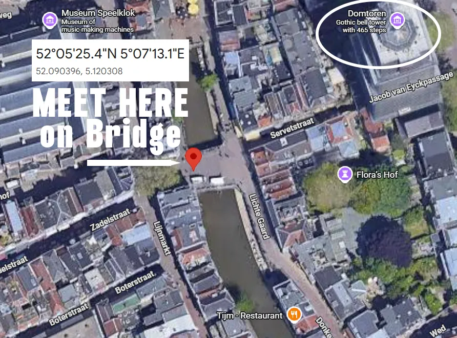

Private page for registered tour members. Details and announcements live here.
All information contained here is subject to change. Please double-check before making plans. Email us if you are unsure.
Announcements prior to, and during the tour are posted here.
While we do our best to keep changes to a minimum, please note that the itinerary and times listed may shift slightly. We'll post and announce all daily meeting times, so just keep an eye out and listen for updates to stay in the loop!
Crossing the EU border at Schiphol with a non-EU passport.
European Entry/Exit System (EES): The Schengen area is collecting entry/exit data (biometrics like fingerprints/face) under the Entry/Exit System (EES); this is separate from visa rules and DOES NOT require prior application.
ETIAS: ETIAS is expected to begin operations in late 2026 and may be required for U.S. travelers by summer 2027. Once the requirement is official, we will post instructions here — the online application is quick and inexpensive. No action is needed from you yet.
EES Details ETIAS (Not Required Yet)
Hotel & Wellness Zuiver
Koenenkade 8, 1081 KH Amsterdam
Phone: +31 20 301 0700
Hotel & Wellness Zuiver — CODE: EUROTOUR27
Extra Nights Hotel Booking Link
For the most part, you can expect warm days; however, the weather can be unpredictable. Best to plan on bringing a sweater/sweatshirt and a light rain jacket.
Athletes will receive a training shirt. Not mandatory, but an item you shouldn't have to worry about cleaning if you wear it to training. The hotel offers a laundry service for a fee.
Athletes, goalies too, must bring their own equipment. Minimum for field players is stick, mouthguard and shin guards. Goalies, make sure you are protected. Training will be serious in Holland.
There is a hockey store close to our hotel if items are needed.
Museumplein 19 — Phone: 0 20 57 55309 — Open 8:30-12 & 1:30-5:15
For flights, you're welcome to choose your preferred airline and departure airport—this is yours to arrange, secure, and purchase. Since summer is a popular travel season, we recommend booking sooner rather than later. Don't forget about your passport: your expiration date should extend 6 months past your return date. If you need a new passport or to renew one, best to do that now so you avoid wait times. PASSPORT APP HERE
To ensure you arrive in time, you'll need to book your flight from the U.S. to depart no later than Wednesday, July 21, 2027. Most flights departing the U.S. will arrive at Amsterdam's Schiphol Airport early on the morning of Thursday, July 22.
The official end of our scheduled program is after the farewell dinner on the evening of Tuesday, July 27 (about 8:30 PM), with final hotel departure/check-out on Wednesday, July 28. If you secured a spot for optional training on our departure day (July 28) you may want to stay in this hotel longer.
Zuiver has everything it takes to completely unplug from your busy life. Inspired by rituals from all over the world for the wide range of luxury treatments and massages.
Hotel & Wellness Zuiver
Koenenkade 8, 1081 KH Amsterdam, Netherlands
Phone: +31 20 301 0700
zuiveramsterdam.nl/en/hotel
The main hotel and spa, where the front desk, breakfast, spa, and gym are located, has two-bedded rooms numbered 1 through 32, reserved for athletes staying together or athletes rooming with their moms. Rooms 56–311 are located just next door (approximately 200 ft away) in the "Annex", and these rooms are single bedded and reserved for families.
All of our programs will start in the main hotel building and all of our group meetings will be held here as well.
Please keep in mind that some assigned rooms may not be ready immediately upon our noon arrival. We appreciate your patience and understanding as the hotel works to get everyone settled as quickly as possible. Your key may not be issued until after we return from sightseeing and dinner.
If you'd like to arrive in Amsterdam early or extend your stay at our hotel, you're in good company! Several group members plan to stay later to participate in optional Dutch training on Wednesday July 28. We have rooms on hold for pre- and post-tour dates, and we've finally received the hotel's instructions on how you can book these extra nights.
Please note that any additional nights will be booked directly with the hotel by each member, as the EuroTour office will not be handling pre- or post-arrival arrangements.
PRE & POST TOUR ROOM BOOKING CODE: "EUROTOUR27"
Booking notes:
1) You may have to book twice, or two separate times, if you intend to have a room both before and again after the tour.
2) You can book two rooms (add rooms) after you select your room type.
3) There's a button on the top right of your computer screen that allows you to switch to English.
4) We've secured EuroTour members a discounted rate that should not exceed $200 USD per room per night (approximately, after euro exchange rate), and that figure includes all federal and local taxes.
Optional, for families arriving on Thursday morning, we'll have a private bus waiting at Schiphol to take us all to the hotel. This bus will leave exactly at 11:00 AM (no later, and cannot wait for late arrivals).
If our bus timing doesn't work for you, whether it's too early or too late, no worries! Schiphol is well-connected, and taxis and Ubers are readily available. A ride to our hotel takes about 15 to 20 minutes.
We will meet members who are taking our airport shuttle with us to the hotel in Schiphol Airport's main terminal at the "Meeting-Point", which is located in Schiphol Plaza, near the Burger King. Look for our staff there. At the SQUARE sign in the image.


We're staying at: Hotel & Wellness Zuiver
Koenenkade 8, 1081 KH Amsterdam
Phone: +31 20 301 0700
11:30AM light snack • 12:30PM welcome meeting
Once at the hotel, we'll kick off with light snacks at 11:30 AM for all our arriving travelers. This is when our program officially begins, so come and get ready to meet everyone. Light snacks will then be followed by a member welcome meeting at 12:30PM, and afterwards we'll head out together by private coach for an afternoon of Dutch sightseeing in the storybook villages of Marken and Volendam.
Please keep in mind that some assigned rooms may not be ready immediately upon our noon arrival. We appreciate your patience and understanding as the hotel works to get everyone settled as quickly as possible. Your key may not be issued until after we return from sightseeing and dinner.
11:00am Shuttle from airport to hotel
11:30am Light snacks/brunch
12:30pm Welcome words
1:00pm On bus for afternoon sightseeing — Marken & Volendam
4:30-5pm Approximate return to hotel
7:00pm Dinner at our hotel
8:00pm Group meeting "Rules of the Road" (mandatory)
INCLUDED: The extensive workout facility and machines.
Please note, while we do not expect changes, minor modifications sometimes do occur, therefore this itinerary is subject to change.
Breakfast opens at 7:00 (and closes at 10:00am).
8:30am Meet our staff and Athlete Liaison in the main hotel lobby. Be dressed in your hockey gear and ready for training. All athletes will walk as a group to get their bikes and, from there, immediately head to the club for training.
GOALIES: BE READY WITH ALL YOUR GEAR. We will have a car to meet us and transport your goalie bags to the club before we get our bikes.
We kindly ask that you allow your daughters to join their fellow athletes as a group, without mom or dad, for today's training. We believe this approach will help them acclimate more comfortably, minimize family distractions, and foster stronger team bonding. Helping both the player and the coach.
Our plans for the family:
Local area SHOPPING MAP
This is totally optional. You are more than welcome to stay back at the hotel and relax or make your own plans for the day.
Regardless of how you plan your day, please be back at the hotel by 4:30 p.m. to meet your daughter.
5:30 pm Meet your staff in the main lobby for a short, easy, flat bike ride to an original farmhouse for a pancake dinner.
All optional. But we hope you'll join us.
No more EuroTour planning. Your night is open.
Breakfast opens at 7:00 (and closes at 11:00am on weekends).
9:30am Meet our staff in the main hotel lobby. Be dressed in your hockey gear and ready for training.
Your day is yours: relax at the hotel, book a spa treatment, explore the city, or bike over to the club to watch training — completely up to you.
If you'd like to visit the club by Uber or taxi, the address is: PINOKE HC, Jan Tooroplaan 46, 1182 AE Amstelveen
Regardless of how you plan your day, please be back at the hotel by about 4:30 pm to meet your daughter.
Dinner is on your own... ENJOY!
End EuroTour planning. Your night is open.

Breakfast opens at 7:00 (and closes at 11:00am on weekends).
Everyone 10:30AM — Bus to Utrecht. 10:30 am we meet in the main lobby. We're off to Utrecht by bus for the day. We'll be in the city center pedestrian walkway. Wear comfortable shoes!
We will be dropped off and walk together into the old city's pedestrian zone, where you will have about 4 hours of free time to explore, shop, and eat. Below, in the image of Utrecht center, in yellow, is the primary area we will walk through. The Tower Bridge will be our meeting point before heading back to the bus.
We will return to the hotel at approximately 4:00 pm.
5:30 pm Parent College Recruiting Workshop (Optional). Ends by 7:00pm.
Dinner is on your own... ENJOY!

Pedestrian Shopping Area

Utrecht Meeting Point
Breakfast opens at 7:00 (and closes at 10:00am).
9:30am Meet our staff in the main hotel lobby. Be dressed in your hockey gear and ready for training.
Your day is yours to plan. Enjoy!
Again, regardless of how you plan your day, please be back at the hotel by 5 p.m. to meet your daughter.
Dinner is on your own.
Breakfast opens at 7:00 (and closes at 10:00am).
9:30am Meet our staff in the main hotel lobby. Be dressed in your hockey gear and ready — today is College Coach Training day, our 4th and final day of Dutch training.
Your day is yours to plan. Enjoy!
Meet in the main hotel lobby for a short walk. The official end of the EuroTour program is 8:30 pm.
Prepare for tomorrow's goodbye: check out and departure.
Breakfast opens at 7:00 (and closes at 10:00am).
Our staff will depart before noon today, except for one of our Athlete Liaisons, who will be accompanying the 'optional' athletes to and from the club for training.
Before you leave, please stop by the reception desk to settle any extra charges you may have.
If you'd like to arrive in Amsterdam early or extend your stay at our hotel, you're in good company! Several group members plan to stay later to participate in optional Dutch training on Wednesday July 28. We have rooms on hold for pre- and post-tour dates. Any additional nights will be booked directly with the hotel by each member, as the EuroTour office will not be handling pre- or post-arrival arrangements.
PRE & POST TOUR ROOM BOOKING CODE: "EUROTOUR27"
An extra Dutch training day on July 28 ($295, training and lunch only) is available as an option. This Dutch training option is able to accept every athlete who is participating in the program with us.
This option is an all-day training clinic operated by our Dutch partners from 9 a.m. to 4:30 p.m.
These directions should work for adding this to your account. Let me know if you have issues: if you have already booked a trip but want to add something to it, it's easy to do. You can do it at any point, even after paying the full balance.
LOG IN by clicking here using the email you registered with. Then go to 'My Trips' and click 'Manage Booking'.
15 Best Restaurants, Bars and Cafes
Anno1890 | 1.3km, 4 min by bike
Amstelveenseweg 1124, Amsterdam (just a 5 minute walk from the hotel). The dish of the day for just €11.00. Every second and last day of the month: live music. Lunch, dinner & drinks.
anno1890.nl
Abina | 3.1km, 10 min by bike
Amsterdamseweg 193. French cuisine. Price range €16,50. Lunch, dinner & drinks.
abina.nl
Alexandros | 3.4km, 12 min by bike
Kostverlorenhof 48-50, Amstelveen. Greek specialties. Price range €21. Dinner.
alexandros.nl
Restaurant aan de Poel | 4.2km, 14 min by bike
Handweg 1, Amstelveen. French/international cuisine. Price range €54. Lunch & dinner.
aandepoel.nl
Nine Streets: SHOPPING MAP
Apple Cake (Dutch Appeltaart) — WINKEL 43: Noordermarkt 43, 1015 NA Amsterdam, in Amsterdam's ever-popular de Jordaan quarter. The crumb in this cake is light, flaky and moist. It is NOT a sweet cake. Served with whipped cream. They serve meals here too. Small venue with outdoor seating. Be careful where you sit; there's another cafe next to it.
Kroket/Croquet (or Bitterballen): Try CAFE PAR HASARD, located in one of Amsterdam's most beautiful neighborhoods on Ceintuurbaan 113-115, a 1.5 km walk south of the Rijksmuseum. Or EETSALON VAN DOBBEN near the Flower Market & Rembrandt Square, Korte Reguliersdwarsstraat 5-7-9.
If you are planning a trip to the Netherlands, there is one gastronomic delicacy you absolutely must try: the famous kroket. This Dutch delicacy is an irresistible croquette made from a combination of finely selected meats and enriched with a creamy roux, meat broth, spices and herbs. Eat it with mustard on white bread! But watch out, they're hot when first served. The Dutch version of pizza burn.
French Fries — Vlaams Friteshuis Vleminckx, the best Friteshuis: The best French fries can be found in the center of the city at Vlaams Friteshuis Vleminckx near the flower market and behind the main pedestrian shopping street, Kalverstraat 33, Amsterdam. Just fries! vleminckxdesausmeester.nl
De Frietfabriek (near our hotel): If you don't want to travel to the city, here's one very close to our hotel and training club: De Frietfabriek, Nieuwe Kalfjeslaan 1, 1181 CA Amstelveen. Excellent fries and snacks. defrietfabriek.com
Stroopwafel: If not fresh at a bakery, believe it or not, the best stroopwafel can be found at supermarkets.
Tulip Bulbs: There are two clearly marked kinds of bulbs for sale: those that can be imported to the US, and those that cannot. Some may claim that their bulbs are legal to take to the USA. However, they must have a metal tag that shows up on a scanner.
Rijks Museum: Only open 9am to 5pm. Adults €22,50, free for ages 18 and under. Rijks Museum LINK
Van Gogh Museum: Open daily 9am to 6pm, Fridays 9am to 9pm. Adults €22,50, free for ages 18 and under. Van Gogh Museum LINK
Heineken Tour: Open daily 10:30am to 7:30pm. Adults €23,00. Heineken LINK
It's not a museum, but worth a look... The Best Cigar Room and Shop (Art Deco motif): For aficionados of cigars or those with a family member who appreciates tobacco, a visit to P.G.C. Hajenius is a must. Revered as the 'old master' of Dutch cigar stores since 1826, Hajenius offers an unparalleled selection within the elegant confines of an Art Déco masterpiece on Amsterdam's Rokin. Insider tip: upon purchasing a cigar, request a cup of coffee and take advantage of the invitation to relax in their exclusive back lounge for a smoke. P.G.C. Hajenius LINK
Aalsmeer Flower Auction: Bloemenveiling Aalsmeer. Tickets for the Royal FloraHolland Aalsmeer flower auction, the world's largest, can be purchased directly on the Royal FloraHolland website or at the visitor center, with adult prices starting around €11.50. The auction is open for visits Monday–Wednesday and Friday from 7 a.m. to 11 a.m. (Thursday until 9 a.m.), with early arrival recommended. About 15 miles from our hotel, near the airport. royalfloraholland.com
Room assignments are subject to change.
Your 2027 tour staff — two Athlete Liaisons (leading and chaperoning athletes to, during, and from club training) and two Family Liaisons (helping family and fans navigate their week in Holland) — will be announced and posted here closer to departure.
During tour week we use WhatsApp to stay connected with each other.